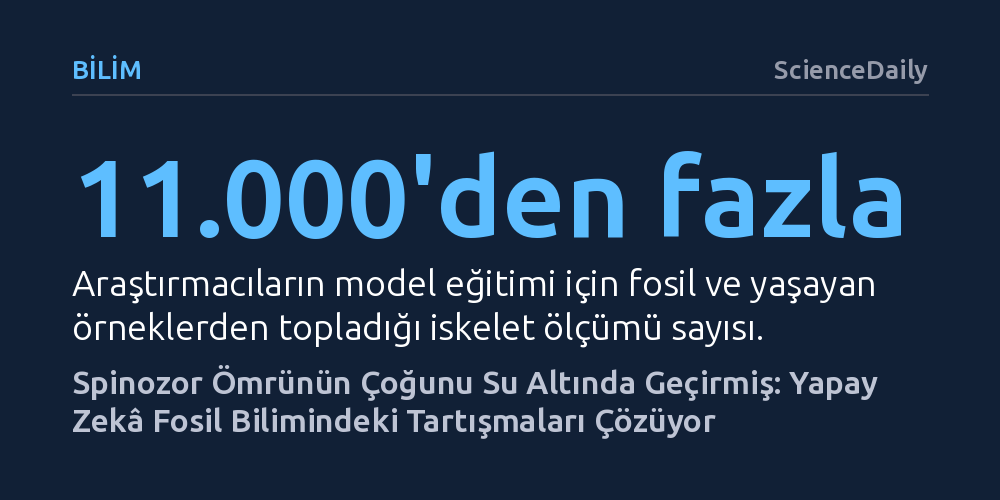

BILIM · ScienceDaily · 2026-10-26
Yale Üniversitesi araştırmacıları, geliştirdikleri makine öğrenimi modeliyle dev yırtıcı Spinosaurus'un ömrünün büyük bölümünü su altında geçirdiğini ortaya koydu. Bulgular ayrıca, en eski deniz sürüngenlerinin sanılanın aksine tamamen sucul olmadığını ve karayla bağlarını koruduğunu gösteriyor.
Dinozorların yaşam tarzına dair yıllardır süren öznel tartışmaları, yapay zekâ ve İkinci Dünya Savaşı radar istatistikleriyle test edilebilir nesnel verilere bağlayarak fosil biliminde yeni bir dönem başlatıyor.

Milyonlarca yıl önce omurgalı hayvanlar denizlerden çıkıp karayı fethetti; ancak evrim her zaman tek yönlü bir patika izlemedi. Zaman içinde memelilerden sürüngenlere pek çok canlı grubu, karasal kazanımlarını geride bırakıp yeniden sulara döndü. İkincil sucul canlılar olarak adlandırılan bu türler; yüzgeçler ve hidrodinamik gövde yapıları geliştirerek evrimsel biyolojide yakınsak evrimin en belirgin örneklerini oluşturdu. Ne var ki fosil kayıtlarının parçalı yapısı, hangi tarih öncesi canlının ne kadar süre su altında kaldığını anlamayı paleontologlar için uzun süredir çözümsüz bir tartışmaya dönüştürüyordu.
Bu tartışmanın odağındaki en meşhur figürlerden biri şüphesiz devasa yırtıcı dinozor Spinosaurus. 113 ila 94 milyon yıl önce günümüz Kuzey Afrika'sında yaşamış olan bu canavarın suyla ilişkisi bilim dünyasını ikiye bölmüştü. Kimi araştırmacılar Spinosaurus'un tıpkı bir penguen ya da fok gibi derin sulara dalarak avlandığını savunurken, diğerleri onun günümüz balıkçılları gibi yalnızca sığ kıyılarda gezinip kıyı boyunca beslenen karasal bir dinozor olduğunu öne sürüyordu. Yale Üniversitesi'nin yürüttüğü kapsamlı çalışma, bu köklü belirsizliğe doğrudan yanıt getiriyor.
Geleneksel paleontolojik yöntemler, fosilleşmiş iskeletlerdeki belirli anatomik ipuçlarına dayanarak çıkarım yapmaya çalışır. Ancak bir iskeletin bazı kemikleri yüzmeye işaret ederken diğer kısımları karada yürümeye elverişli göründüğünde uzmanlar nesnel bir sonuca ulaşmakta zorlanır. Yale Üniversitesi araştırmacıları, bu öznelliği aşmak amacıyla yaşayan hayvanların anatomik ölçümleriyle eğitilen yenilikçi bir makine öğrenimi modeli geliştirdi.
Araştırma ekibi Yale Peabody Müzesi ve dünya çapındaki koleksiyonlardan hem fosil hem de yaşayan yüzlerce türe ait 11.000'den fazla ölçüm, fotoğraf ve bilgisayarlı tomografi verisi topladı. Çalışmanın en sıra dışı yönü ise İkinci Dünya Savaşı sırasında donanmanın radardaki belirsiz yankıların düşman uçağı olup olmadığını belirlemek için başvurduğu istatistiksel bir yöntemin paleontolojiye uyarlanması oldu. Özellikle ön ayak oranlarını inceleyen bu yaklaşım, fosillerde nadiren korunan yüzgeç gibi yumuşak doku yapılarını ve canlıların sucul alışkanlıklarını yüzde 90'ın üzerinde bir doğruluk oranıyla tespit etmeyi başardı.
Geliştirilen modelin sunduğu analizler, Spinosaurus tartışmasında suları durultacak nitelikte. Elde edilen bulgular, bu devasa dinozorun ömrünün ezici bir çoğunluğunu su altında geçirdiğini ve derin sulara dalarak avlanan son derece gelişmiş bir sucul yaşam tarzına sahip olduğunu gösteriyor. Bu tespit, Spinosaurus'un kıyıda bekleyen sıradan bir kıyı avcısından ziyade sucul ekosisteme bütünüyle adapte olmuş bir avcı olduğu görüşünü güçlendiriyor.
Araştırmanın bir diğer şaşırtıcı sonucu ise 290 ila 274 milyon yıl önce yaşamış erken deniz sürüngenleri olan mezozorlarda ortaya çıktı. Mezozorlar anne karnında canlı doğum yapabildikleri için uzun zamandır bütünüyle sucul kabul ediliyordu. Ancak yeni model, uzuv oranlarının kesintisiz bir su yaşamına uygun olmadığını; bu canlıların günümüz timsahları ya da ornitorenkleri gibi karayla bağlarını hiçbir zaman koparmadığını kanıtladı. Hatta bulgular, dinozorlardan önce yaşamış Paleozoyik deniz sürüngenlerinin hiçbirinin tamamen sucul bir yaşama geçmediğini, hepsinin amfibik kalarak karaya dönmeye devam ettiğini gösteriyor.
Çalışmanın kıdemli yazarı Bhart-Anjan Bhullar, geçmiş dünyaları canlandırırken öznel hikâye anlatıcılığından bilimsel titizliğe geçmenin önemini vurguluyor: "Caleb'in yöntemi bu süreçteki öznelliği ortadan kaldırıyor ve verilerin kendi adına konuşmasını sağlıyor." Yalnızca kemik parçalarına bakarak yapılan kişisel yorumların yerini yaşayan canlıların verileriyle desteklenen makine öğrenimi modellerinin alması, fosil kayıtlarındaki çelişkileri çözmek için güvenilir bir zemin sunuyor.
Geliştirilen bu analitik yaklaşım sadece tarih öncesi sucul canlılarla sınırlı kalmayacak. Araştırmacılar aynı yöntemin omurgalı evrimindeki diğer büyük dönüm noktalarını incelemek için de kullanılabileceğini belirtiyor. İnsan atalarının iki ayak üzerinde dik yürümeye ne zaman ve nasıl başladığı ya da kuşların dinozor atalarından uçuş yeteneğini nasıl devraldığı gibi kritik evrimsel geçişler, artık savaş dönemi istatistikleri ve modern veri biliminin ortaklığıyla aydınlatılabilecek.